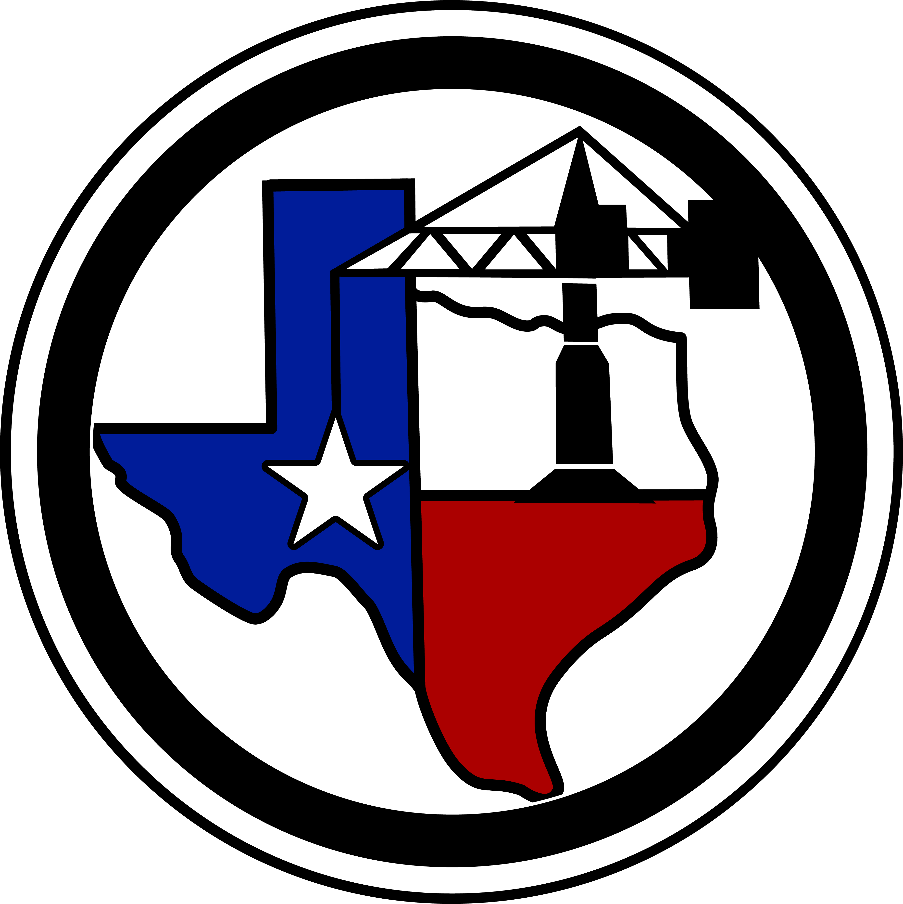
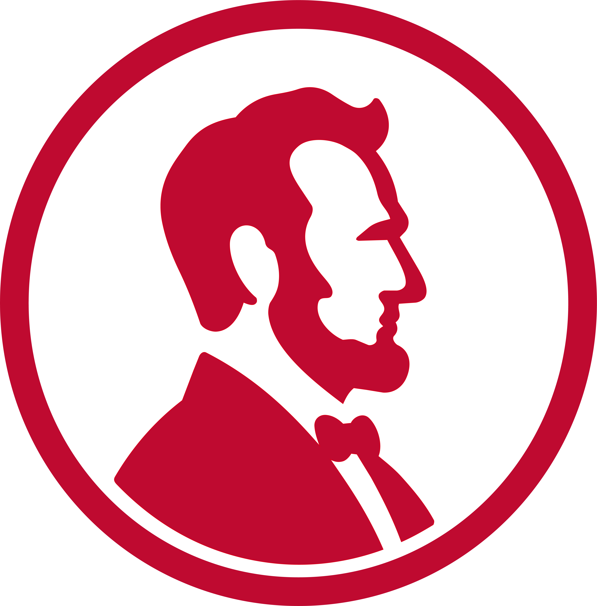
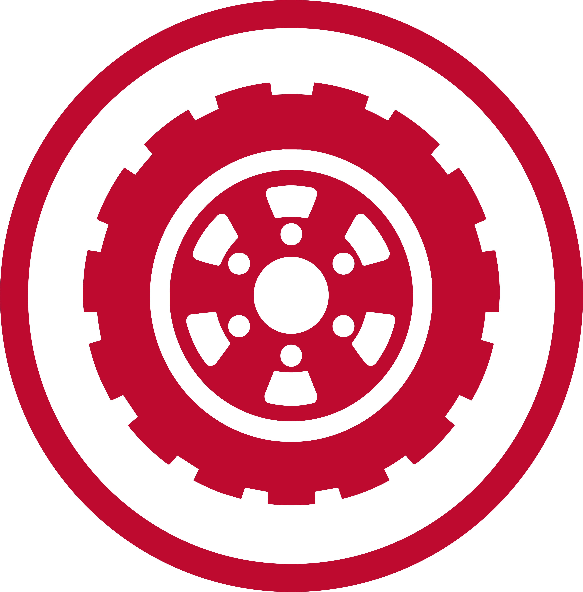
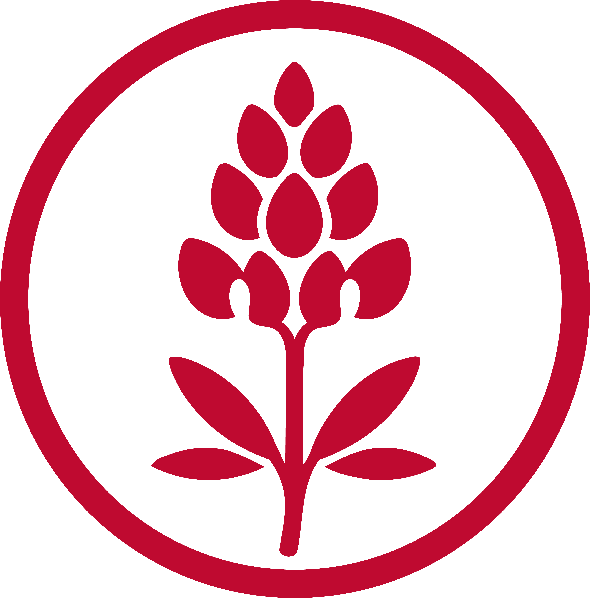
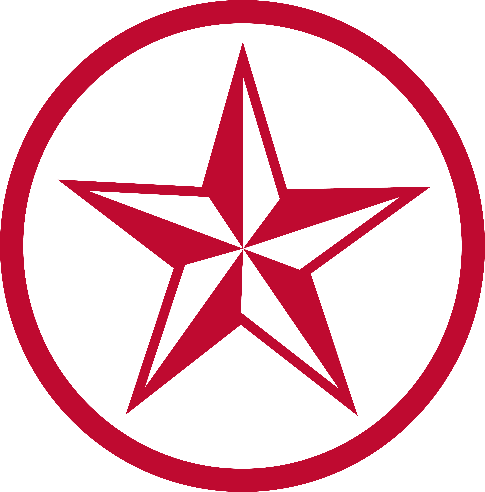

How Texas Is BuiltFrom Quarry to Community: the visual system behind How Texas Is Built — fonts, color, logo, assets, and components.
How Texas Is Built tells the story of aggregates and concrete — the roads, homes, schools, hospitals, and infrastructure Texans rely on every day. The brand reads as institutional but human: bold Bebas Neue headlines, an editorial Libre Baskerville serif for reflection, and a clean DM Sans for everything functional, anchored by Texas red and navy.
“From Quarry to Community: The Foundation of Your Texas Life.”
Plainspoken and factual. Lead with what the materials make possible for real Texans — commutes, hospitals, water, homes — not with industry jargon.
The primary lockup pairs the circular mark with the wordmark set in Bebas Neue, where “Texas” always takes the brand red. Keep clear space of at least the disc's radius on all sides. Prefer the mark on dark navy; use the light tile only when a dark ground isn't possible.
Red is the identity accent — CTAs, icons, eyebrows, and highlights. Navy is structural — headings, borders, and dark sections. Neutrals carry everything else. Support colors are reserved for specific meanings (green = responsible/positive; amber & rust = the local-sourcing cost tiers).
Every screen uses the same three families. Bebas Neue shouts, Libre Baskerville reflects, DM Sans does the work. Never introduce a fourth typeface.
Set in ALL CAPS with a touch of letter-spacing (~.02–.04em) and tight line-height (.95–1.0). Used large; never for body copy.
Regular & Bold, plus Italic for taglines and pull quotes. Carries the reflective, human side of the brand at 1.05–2.6rem.
The default UI font. Uppercase + letter-spacing for eyebrows, labels, and buttons; sentence case for paragraphs.
The journey icons are rendered in a single brand red (the former per-step rainbow was retired). Each square badge sits above its step number and title on the home page and step-page heroes.




Photography: real Texas infrastructure and industry scenes, cool-toned, always under a navy gradient scrim (lightened ~10% on the growth, impact, local-sourcing, and quality heroes) so white type stays legible.
Corners draw from a three-token scale, buttons all share one style, and cards use a subtle shadow with a red top accent. These are live examples rendered with the site's exact values.
One shape (6px radius), one size, uppercase 700. Red is primary; outline and ghost are secondary.
Pill chips for tags; the red dash-eyebrow labels every section.
Small for controls, medium for containers, pill for chips, 50% for the mark.
White surface, 10px radius, soft shadow, red top accent, lift on hover.
Local access to aggregates and concrete keeps roads, homes, and schools within reach for every community.
The home hero's five-step navigator: dark navy glass buttons, thin white border, Bebas Neue labels, brand-red hover.
Generous whitespace on a ~1080px content column. Sections alternate white and off-white; dark navy anchors heroes, CTAs, and footers. Motion is restrained — a gentle fade-and-rise on scroll, a slow hero zoom, and −2 to −3px lifts on hover. Nothing bounces.
Elements fade in and rise 30px over ~.6s as they enter the viewport. Respects reduced-motion.
Cards and buttons translate up 2–3px with a deeper shadow. Journey buttons shift to brand red.
A 165° navy gradient over slowly-zooming photography keeps white headlines readable.